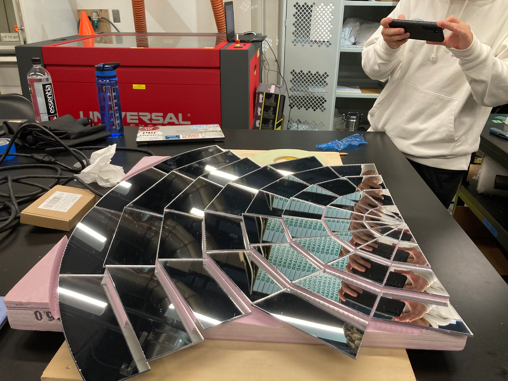
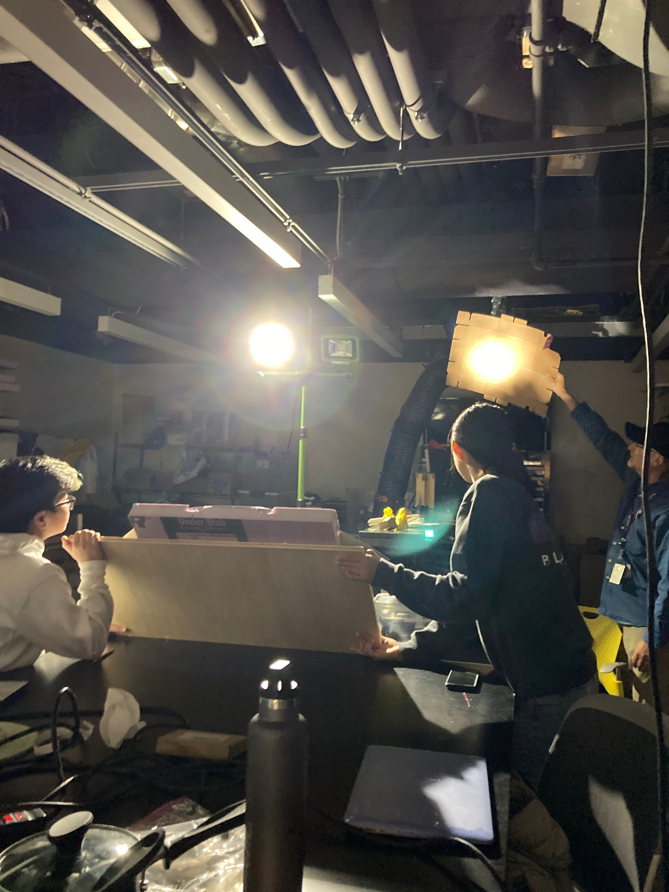
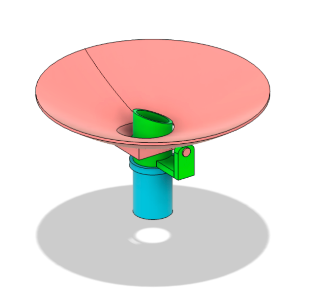
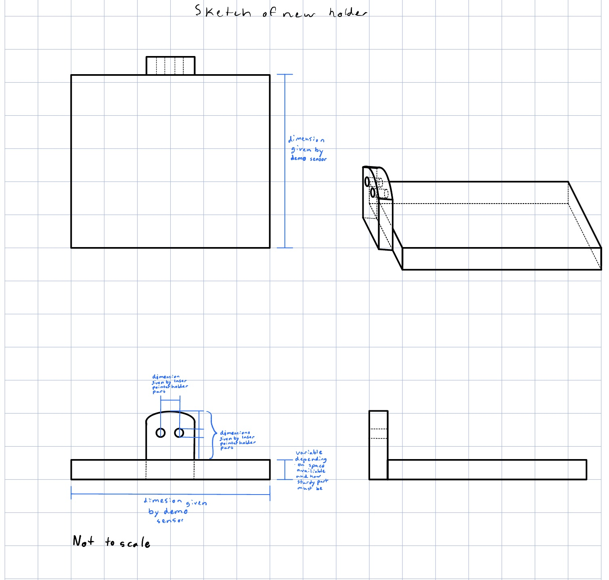

## Week 3:
### Monday:
I worked with Christine on getting the stepper motor to turn based on which halves (left or right) of our
photoresistor detected lower amounts of light. We then added another stepper motor to our program so it
would turn the new motor based on which half (up or down) sensed less light as well. In addition, I
helped finish putting together our demo reflector. We tested the demo reflector.


In addition, we started brainstorming how we would set up the framework and turning mechanisms of our solar
cooker. We discussed using wheels or whegs to rotate the base in order to get one degree of freedom. This
would have the disadvantage of being less stable on non-flat and non-leveled surfaces as well as having to
hold the weight of both motors. In the end, we decided that the most promising way to do it is based on
this model:

This would require focusing the light into a tube with a reflective inside that would lead down to our
salt battery. We would be able to turn the reflector along one degree of freedom and also rotating
the upper part of the reflective tube for the other degree of freedom.
### Wednesday:
Today, we worked on 3D printing a framework that we could use to test our stepper motor program.
Here is a [link to the specs for the device](https://www.thingiverse.com/thing:4917505).
This framework will be able to move freely along two degrees of freedom when the motors are placed inside,
similar to our planned prototype. Christine and I worked on designing a new part that could hold our
light sensing device. Since we are both new to using Fusion 360, we did not get very far, but we did
complete a sketch.
